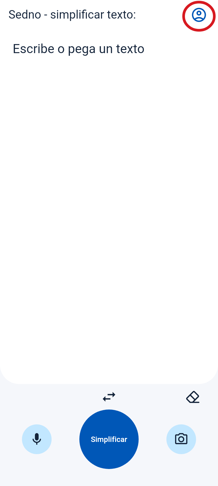
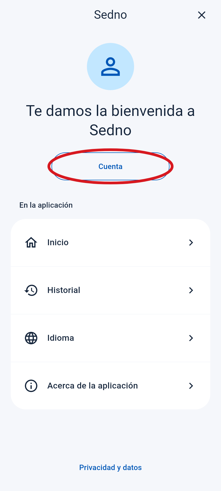
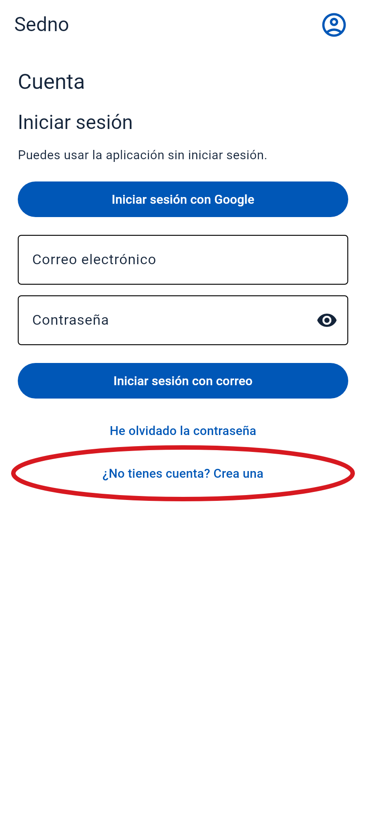
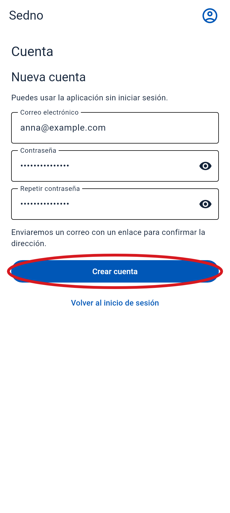
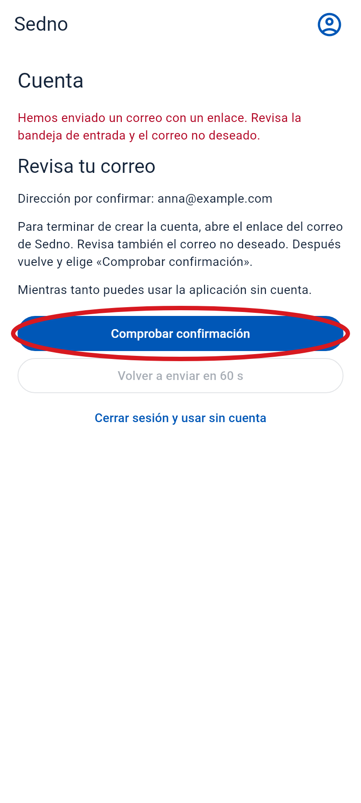
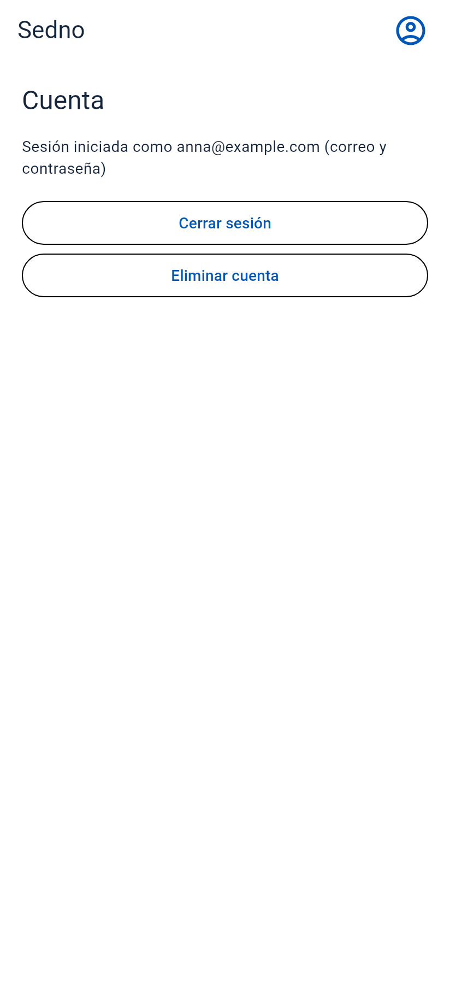

Cómo crear una cuenta
Abre Sedno en tu teléfono. Sigue estos pasos en orden.
El círculo rojo muestra dónde tocar. Estas pantallas son de la aplicación. El correo es un ejemplo.
-
1 Abre el menú
Toca el icono de la persona arriba a la derecha.
Toca aquí

-
2 Elige «Cuenta»
Toca el botón dentro del círculo rojo.
Toca aquí

-
3 Elige crear una cuenta
Toca «¿No tienes cuenta? Crea una». Si no ves el botón, desliza hacia arriba.
Toca aquí

-
4 Escribe tu correo y una contraseña
- Escribe tu dirección de correo.
- Elige una contraseña de al menos 6 caracteres.
- Escribe la misma contraseña otra vez debajo.
- Toca «Crear cuenta».

-
5 Abre tu correo
Busca el mensaje de Sedno. Mira también en Spam. Abre el mensaje y toca el enlace para confirmar tu correo.
Toca aquí
Correo de ejemplo
Sedno
Confirma tu dirección de correo en Sedno.
Confirmar correo -
6 Vuelve a Sedno
Abre Sedno otra vez. Si aún ves esta pantalla, toca «Comprobar confirmación».
Toca aquí

-
7 ¡Listo!
Ves tu dirección de correo. Tu cuenta está lista.
